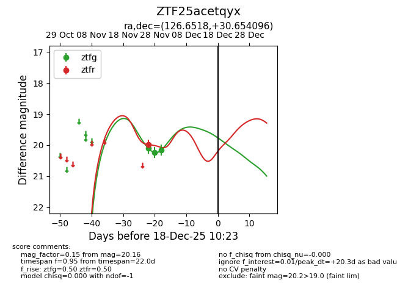
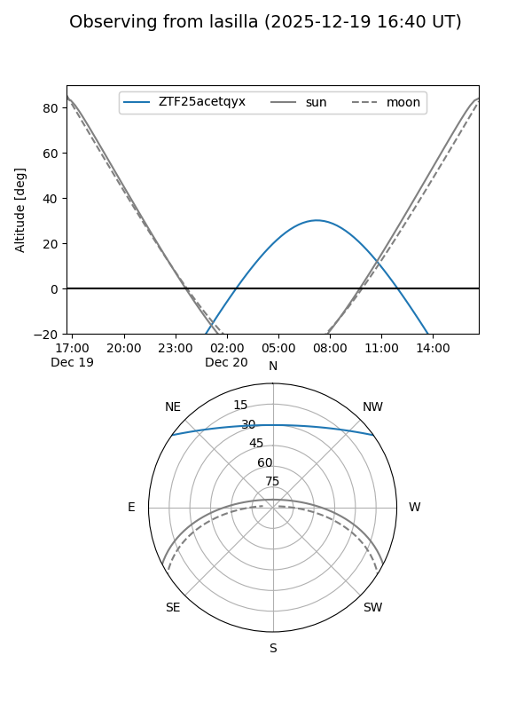
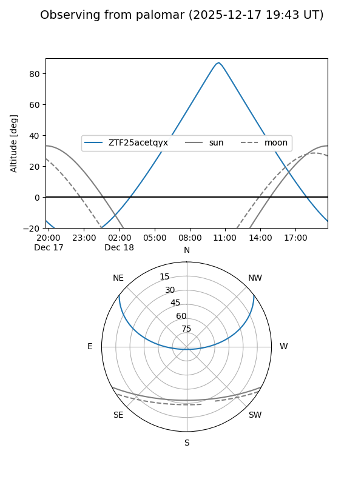
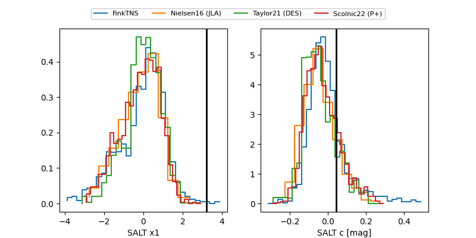

ZTF25acetqyx
Target ZTF25acetqyx at 2025-12-19 12:33
Aliases and brokers:
FINK: fink-portal.org/ZTF25acetqyx
Lasair: lasair-ztf.lsst.ac.uk/objects/ZTF25acetqyx
ALeRCE: alerce.online/object/ZTF25acetqyx
alt names
ZTF25acetqyx (ztf,fink_ztf)
Coordinates:
equatorial (ra, dec) = 126.6518,+30.65410
equatorial (HMS+DMS) = 08:26:36.44,+30:39:14.75
galactic (l, b) = (192.3546,+32.77590)
Flags:
Photometry:
last ztfg=20.16, ztfr=19.98
3 ztfg, 1 ztfr detections
Lightcurve

Visibility


Additional plots
